Pattern / Builder
Agent/Workflow Builder
사용자가 에이전트나 워크플로우를 직접 구성하고, 테스트하고, 배포할 수 있게 하는 UI 패턴입니다. 역할·지시문·지식·도구·권한을 설정하거나 트리거·조건·액션을 연결해 자동화 흐름을 만듭니다.
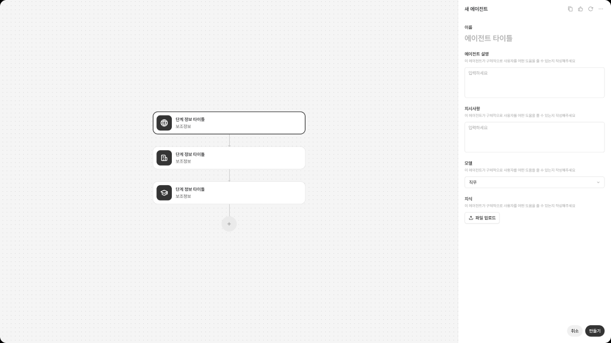
Overview
Builder는 사용자가 에이전트나 워크플로우를 직접 구성하고, 테스트하고, 배포할 수 있게 하는 UI 패턴입니다. 사용자는 AI에게 단순히 질문하는 것이 아니라, 에이전트의 역할, 지시문, 지식 범위, 도구, 권한을 설정하거나, 트리거·조건·액션을 연결해 자동화 흐름을 만듭니다. 이 패턴에서 AI는 즉시 응답하는 대화 상대라기보다, 사용자가 정의한 규칙과 흐름에 따라 실행되는 구성 대상입니다. 이 패턴은 제품 안에서 사용자가 반복 업무를 자동화하거나, 특정 목적에 맞는 에이전트를 생성하고 관리해야 할 때 적합합니다.
이 분류를 선택하는 경우
| 선택 조건 | 설명 |
|---|---|
| 사용자가 에이전트의 역할을 직접 설정해야 한다 | 특정 업무를 수행하는 AI의 이름, 목적, 역할, 응답 방식, 지식 범위를 사용자가 정의해야 하는 경우 |
| 지시문과 동작 규칙을 관리해야 한다 | 에이전트가 어떤 방식으로 답변하고, 어떤 한계를 지켜야 하는지 명시해야 하는 경우 |
| 도구와 권한을 연결해야 한다 | 에이전트가 사용할 수 있는 API, 데이터, 앱, 기능, 권한 범위를 사용자가 설정해야 하는 경우 |
| 자동화 흐름을 구성해야 한다 | 사용자가 트리거, 조건, 단계, 액션을 조합해 반복 업무 흐름을 만들어야 하는 경우 |
| 생성 후 테스트가 필요하다 | 설정한 에이전트나 워크플로우가 의도대로 동작하는지 미리 실행하고 검증해야 하는 경우 |
이 템플릿을 사용하지 않는 경우
| 선택하지 않는 경우 | 대신 고려할 패턴 |
|---|---|
| 사용자가 AI와 직접 대화하며 즉시 응답을 받아야 한다 | Global Chat Assistant |
| 특정 산출물을 작업공간 안에서 AI와 함께 편집해야 한다 | Dedicated Agent Workspace |
| 현재 화면을 유지한 채 AI 패널에서 도움을 받아야 한다 | Contextual Agent Panel |
| AI 작업이 백그라운드에서 실행되고 상태만 확인하면 된다 | Background Task Monitor |
Key Characteristics
| 구분 | 내용 |
|---|---|
| 진입 방식 | 새 에이전트 생성, 새 워크플로우 생성, 템플릿 선택, 기존 설정 편집 |
| 입력 방식 | 역할, 지시문, 지식 범위, 도구, 권한, 트리거, 조건, 액션, 실패 처리 |
| 응답 방식 | 구성된 에이전트, 자동화 플로우, 테스트 결과, 실행 로그, 오류 안내 |
| 컨텍스트 활용 | 연결된 데이터, 앱 권한, 업무 도구, 사용자 설정, 실행 기록 |
| 사용자 흐름 | 생성 → 설정 → 테스트 → 수정 → 저장·배포·활성화 |
| 주요 가치 | 반복 업무를 사용자가 직접 AI 에이전트나 자동화 흐름으로 구성할 수 있게 함 |
주요 예시 레퍼런스
실제 제품에서 Agent/Workflow Builder 패턴이 어떻게 구현되는지 보여주는 대표 사례입니다.
Sana Agent
문서 안에서 텍스트를 선택하고 Ask AI를 실행하거나 /AI를 입력해 요약, 번역, 톤 변경, 액션 아이템 추출 등을 수행할 수 있습니다.
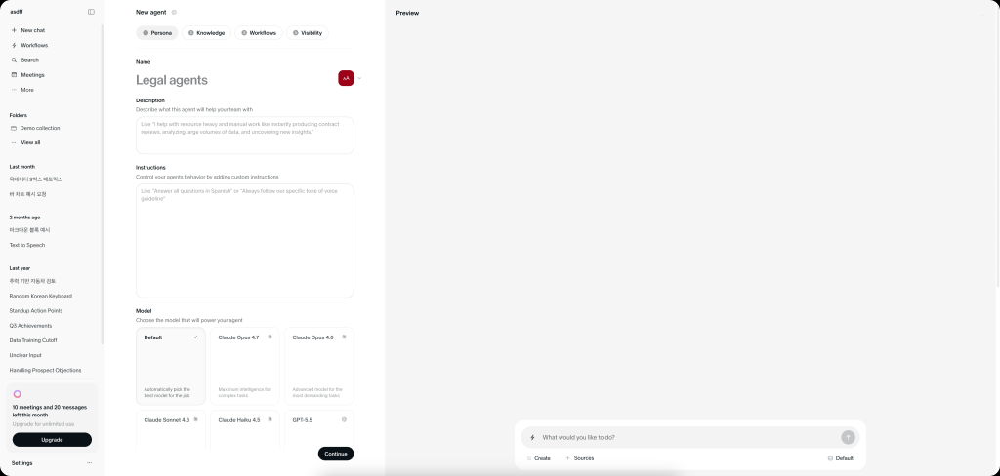
Sana Workflow
문서 안에서 텍스트를 선택하고 Ask AI를 실행하거나 /AI를 입력해 요약, 번역, 톤 변경, 액션 아이템 추출 등을 수행할 수 있습니다.
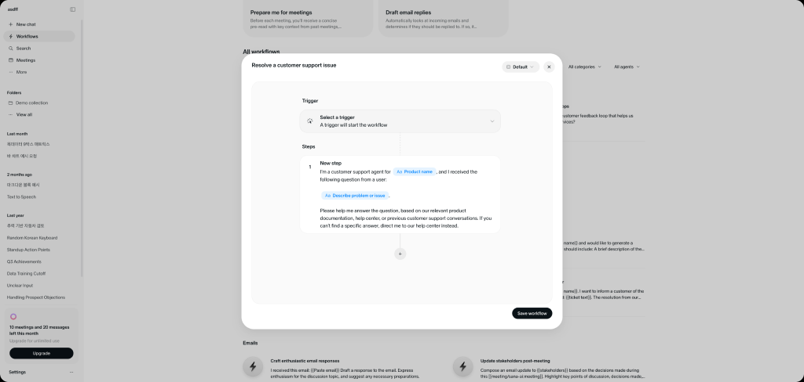
OpenAI Agent Builder
사용자가 글을 작성하는 입력 환경 안에서 톤, 명확성, 문장 개선 제안을 인라인으로 제공합니다. Grammarly는 여러 작성 환경에서 실시간 제안과 문단 단위 재작성 기능을 제공한다고 설명합니다.
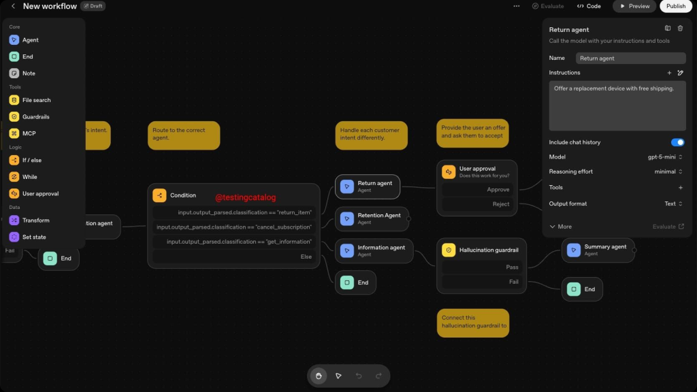
Basic Layout Structure
Builder는 사용자가 에이전트나 워크플로우의 동작 방식을 구성하고 검증할 수 있도록, 설정 영역과 테스트 영역을 함께 제공하는 구조를 가집니다. 하위 분기에 따라 Form-based Builder, Workflow Builder, Modal Step Builder, Node Graph Builder로 나뉘지만, 기본적으로는 Builder Header, Configuration Area, Tool / Permission Area, Test Area, Publish / Save Action으로 구성됩니다.
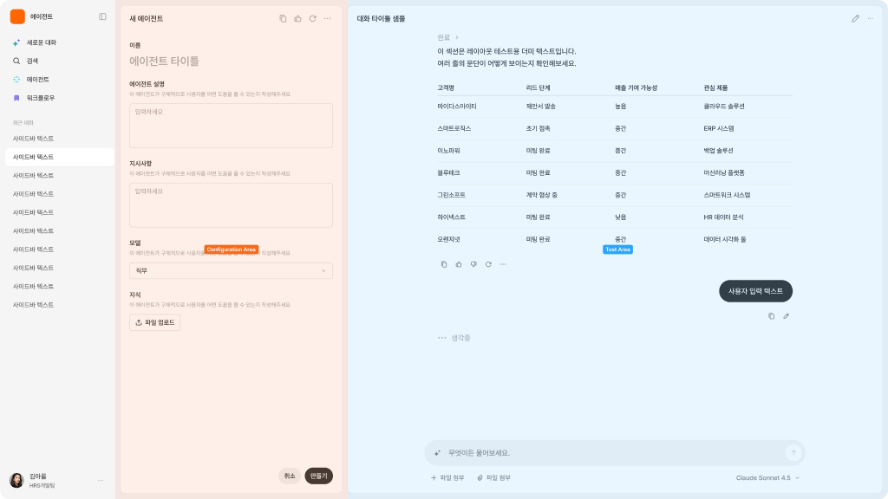
레이아웃 원칙
| 원칙 | 설명 |
|---|---|
| 설정 구조화 | 복잡한 설정을 역할, 지시문, 도구, 권한, 트리거, 액션 등 이해 가능한 단위로 나눕니다. |
| 테스트 가능성 | 사용자가 저장하거나 배포하기 전에 실제 동작을 미리 확인할 수 있어야 합니다. |
| 권한 투명성 | 에이전트나 워크플로우가 어떤 데이터와 도구에 접근하는지 명확히 보여줍니다. |
| 점진적 설정 | 처음부터 모든 설정을 요구하지 않고, 기본값과 템플릿을 통해 빠르게 시작할 수 있어야 합니다. |
| 오류 예방 | 필수 설정 누락, 권한 부족, 위험한 실행 조건을 사전에 안내해야 합니다. |
Variants
Builder는 사용자가 무엇을 구성하는지, 그리고 구성 방식이 폼 중심인지 흐름 중심인지에 따라 하위 UI가 나뉩니다.
| 하위 분기 | 한 줄 정의 | 선택 기준 |
|---|---|---|
| Form-based Builder | 에이전트 역할, 지시문, 지식, 도구, 권한을 폼으로 설정 | 에이전트의 동작 규칙과 설정값을 구조화된 항목으로 입력해야 할 때 |
| Workflow Builder (Step-based) | 트리거, 조건, 액션을 순차 단계로 구성 | 업무 흐름이 선형 단계로 진행되고, 각 단계를 순서대로 설정해야 할 때 |
| Workflow Builder (Step-based, Modal Type) | 각 단계를 모달에서 집중적으로 설정 | 전체 흐름은 단순하지만, 각 단계의 설정 항목이 많아 별도 편집 화면이 필요할 때 |
| Workflow Builder (Node Graph Builder) | 노드와 엣지로 분기·병렬·도구 연결을 시각적으로 구성 | 분기, 병렬 처리, 여러 도구 연결처럼 복잡한 흐름을 시각적으로 다뤄야 할 때 |
Form-based Builder
에이전트의 역할, 지시문, 지식 범위, 도구, 권한을 구조화된 폼으로 설정하는 UI입니다.
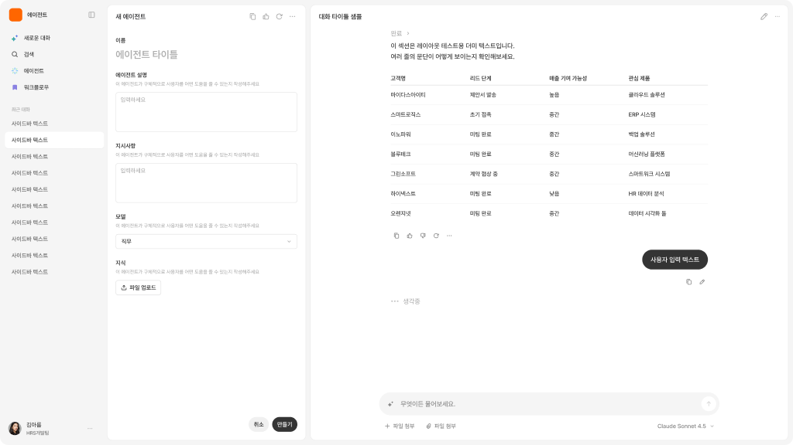
Workflow Builder (Step-based)
트리거, 조건, 액션을 순차적인 단계로 구성하는 UI입니다.
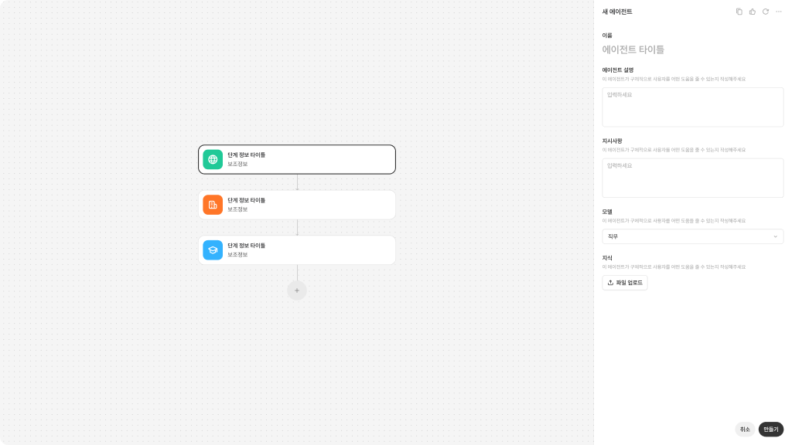
Workflow Builder (Step-based, Modal Type)
워크플로우의 각 단계를 클릭하면 모달에서 세부 설정을 입력하는 UI입니다.
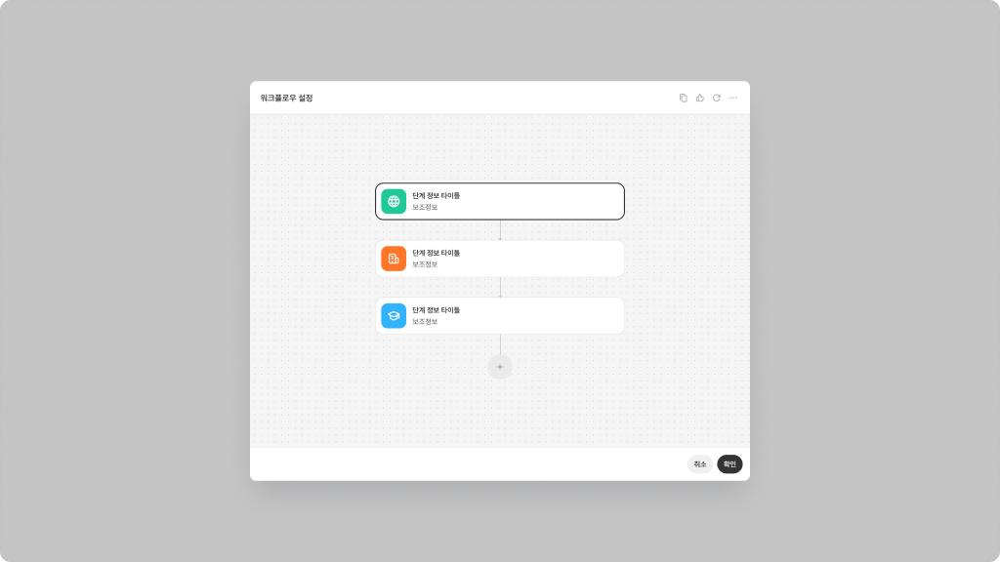
Workflow Builder (Node Graph Builder)
트리거, 조건, 액션, 도구, 분기, 병렬 흐름을 노드와 연결선으로 구성하는 UI입니다.
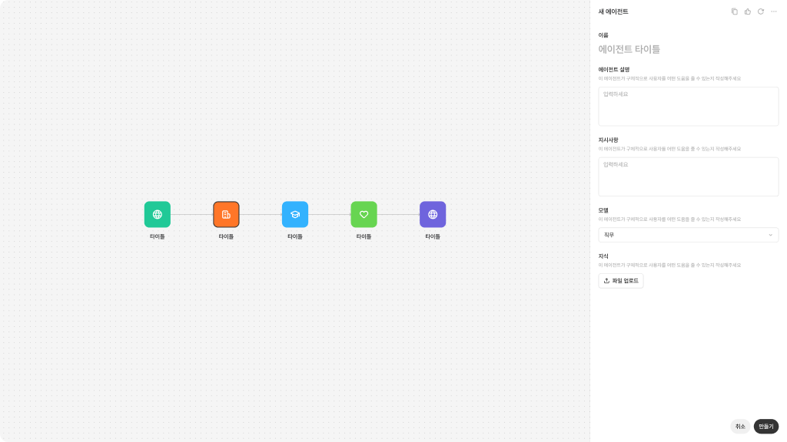
Interaction
Trigger - Builder Start
사용자가 새 에이전트 만들기, 새 워크플로우 만들기, 템플릿 선택, 기존 설정 편집을 통해 Builder에 진입합니다.

전역 혹은 특정 기능 페이지 내의 버튼, 내비게이션 요소를 통해 AI Assistant를 호출합니다.
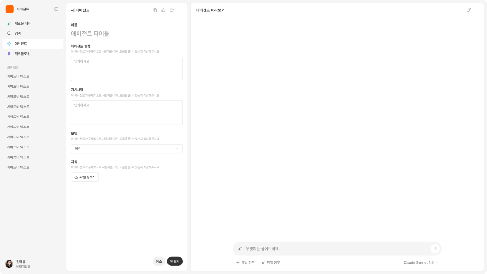
에이전트 혹은 워크플로우 빌더는 호출된 포인트에 따라 다양한 형태로 나타날 수 있습니다. (에이전트 내 하위 기능으로 존재 or 별도의 독립적 기능 구성 가능)
Input - Configuration
사용자는 역할, 지시문, 지식 범위, 도구, 권한, 트리거, 조건, 액션, 실패 처리 등 실행에 필요한 설정값을 입력합니다.
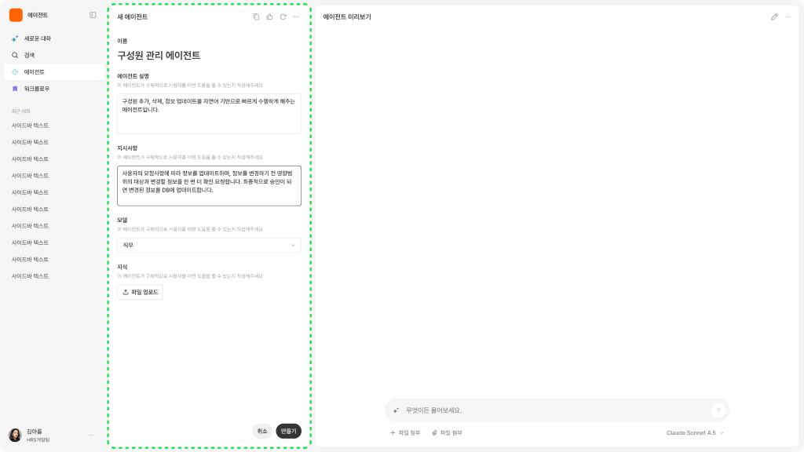
에이전트, 워크플로우 동작에 필요한 프롬프트, 권한 등 복합적 정보를 폼 필드의 구성으로 입력 받습니다.
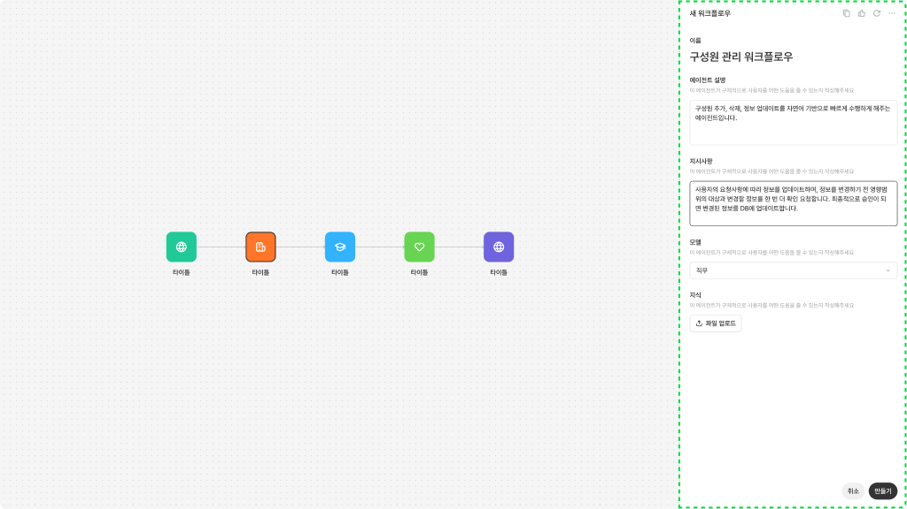
노드 구성의 경우, 각 블록별 필요한 정보와 조건 등을 폼 필드의 구성으로 입력 받습니다.
Output - Configured Agent or Workflow
시스템은 설정된 에이전트 또는 워크플로우 구조를 생성하고, 테스트 가능한 형태로 보여줍니다.
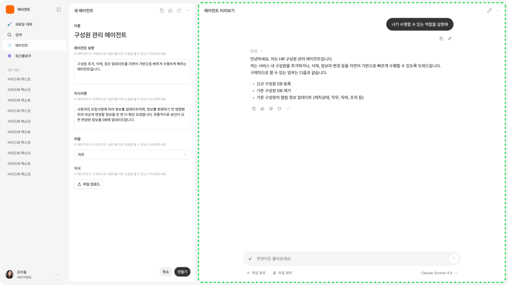
입력된 내용을 바탕으로 구성한 항목을 테스트런할 수 있는 미리보기 영역이 제공될 수 있습니다.
Follow up - Test and Publish
사용자는 테스트 실행으로 동작을 검증하고, 설정을 수정한 뒤 저장·게시·활성화·복제할 수 있습니다.
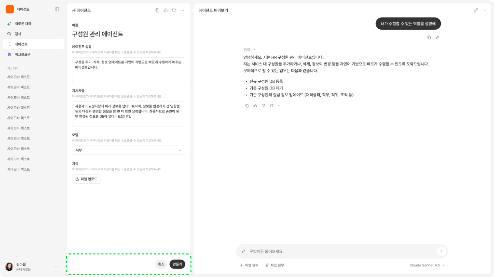
테스트로 동작 검증 후 사용자는 에이전트나 워크플로우를 게시할 수 있습니다.
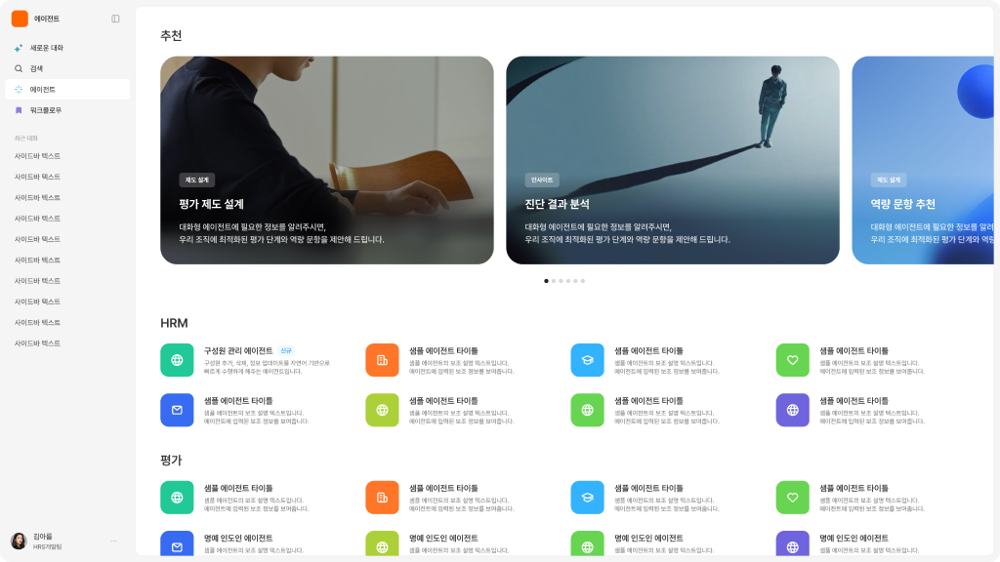
다른 사람이 사용할 수 있는 에이전트나 워크플로우라면, 접근 가능한 갤러리에 생성한 항목이 추가됩니다.